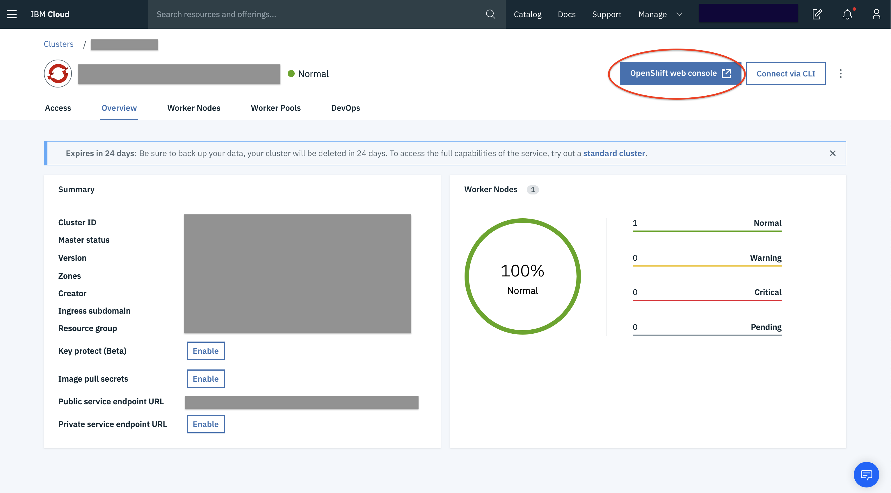
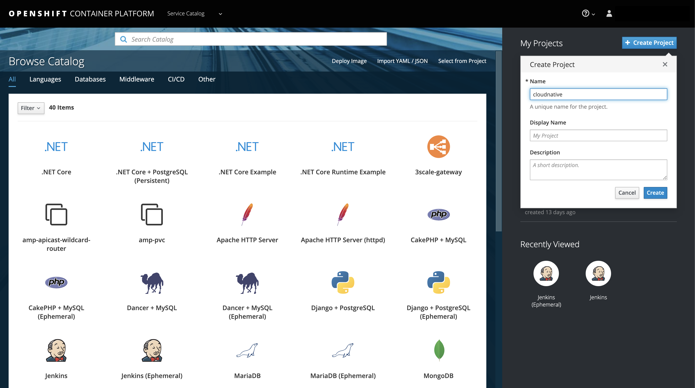
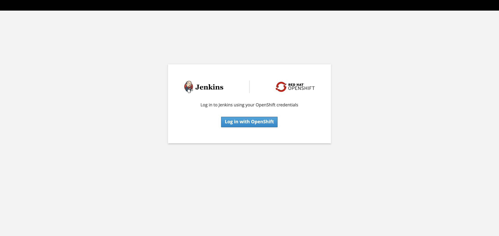
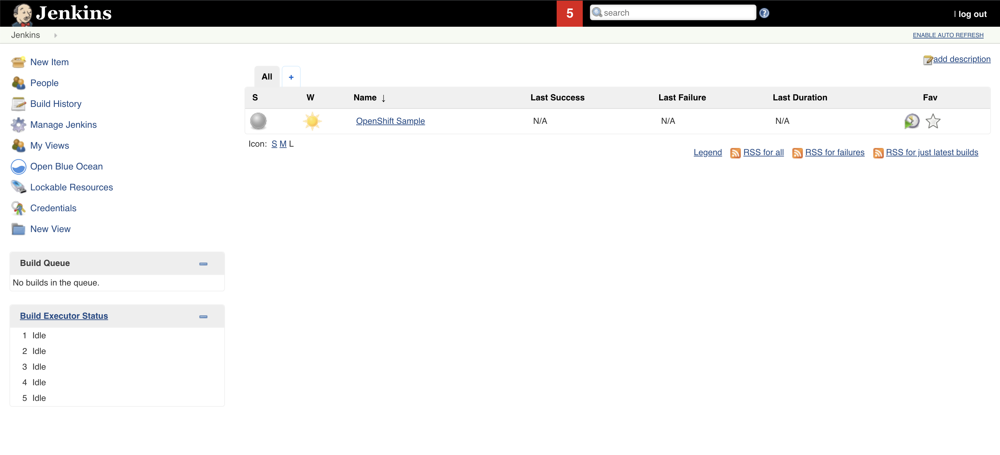
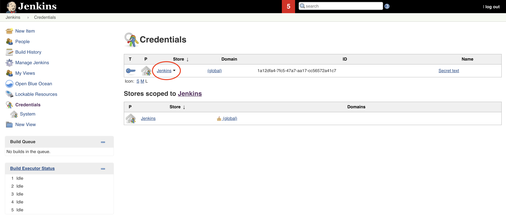
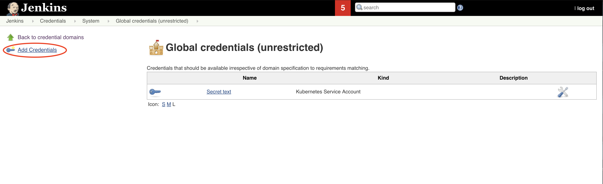
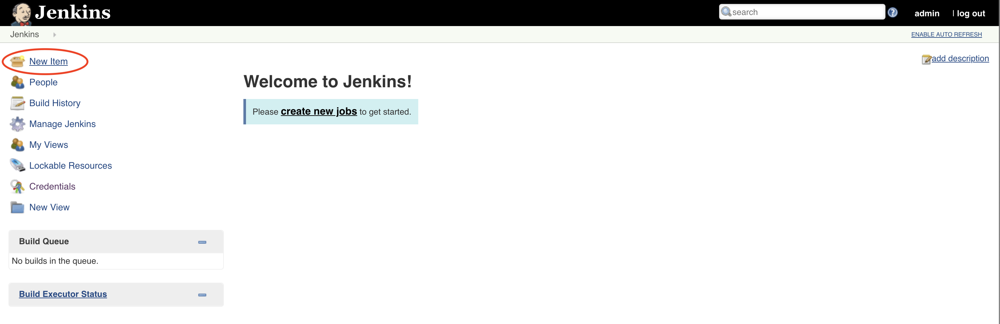
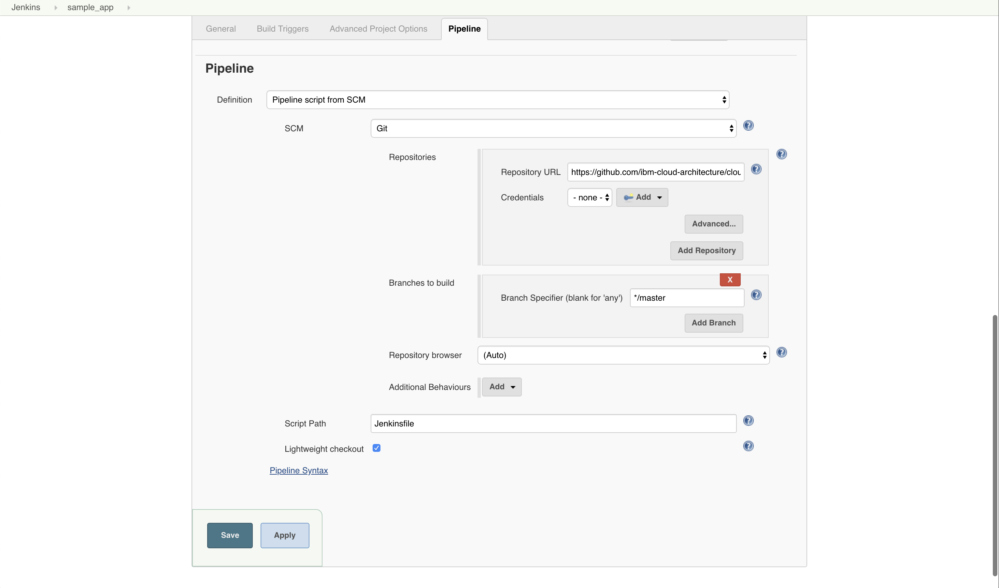
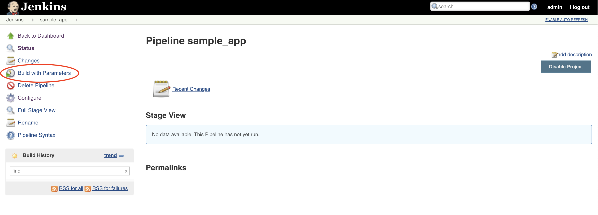

Jenkins Lab
Introduction
In this lab, you will learn about how to define Continuous Integration for your application. We are using Jenkins to define it.
Jenkins
Jenkins is a popular open source Continuous Integration tool. It is built in Java. It allows the developers to perform continuous integration and build automation. It allows you to define steps and executes them based on the instructions like building the application using build tools like Ant, Gradle, Maven etc, executing shell scripts, running tests etc. All the steps can be executed based on the timing or event. It depends on the setup. It helps to monitor all these steps and sends notifications to the team members in case of failures. Also, it is very flexible and has a large plugin list which one easily add based on their requirements.
Check these guides out if you want to know more about Jenkins - Jenkins, Leading open source automation server.
Prerequisites
- You need an IBM cloud account.
- Create kubernetes cluster using IBM Cloud Kubernetes Service. Here, you can choose an openshift cluster.
- Install oc command line tool.
- You should be familiar with basics like Containers, Docker, Kubernetes.
Continuous Integration
Install Jenkins
- Open the IBM Cloud Openshift cluster.

- Click on the
OpenShift web consoletab and this will take you to openshift UI.

- Create a new project.

- Search for
Jenkins.

- Choose
Jenkins (Ephemeral).

- Install it.

- Wait till the Jenkins installs and the pods are ready.

- Once, it is ready you can access the Jenkins by clicking the link.

Now, click on Log in with OpenShift.
- When you gets logged in, you will see the below screen. Click
Allow selected permissions.

- You will be able to access the Jenkins UI now.

Get the Sample App
- Fork the below repository.
- Clone the forked repository.
Jenkinsfile
Before setting up the CI pipeline, let us first have a look at our Jenkinsfile and understand the stages here.
Open your Jenkinsfile or you can also access it https://github.com/ibm-cloud-architecture/cloudnative_sample_app/blob/master/Jenkinsfile[here].
In our Jenkins file, we have five stages.
- Local - Build
In this stage, we are building the application and packaging it using maven.
- Local - Test
In this stage, we are making all the unit tests are running fine by running maven test.
- Local - Run
In this stage, we are running the application using the previous build and verifying the application performing health and api checks.
-
Build and Push Image
-
We are logging in to the IBM Cloud and accessing the IBM Cloud Container Registry.
- We are also creating a namespace if not present.
- We are building the image using ibmcloud cli tools.
- Once the image is built, it is pushed into the container registry.
In this stage, we are building the docker image and pushing it to the registry.
-
Push to Deploy repo
-
Initially, we are cloning the deploy repository.
- Changing the image tag to the one we previously built and pushed.
- Pushing this new changes to the deploy repository.
In this stage, we are pushing the new artifact tag to the deploy repository which will later be used by the Continuous Delivery system.
Jenkins Credentials
Let us now build all the credentials required by the pipeline.
- In the Jenkins home page, click on
Credentials.

- In the Credentials page, click on
Jenkins.

- Now, click on
Global Credentials (UnRestricted).

- Click on
Add Credentialsto create the ones required for this lab.
image::Jenkins_add_creds.png[align="center"] 
- Now create a secrets as follows.
Kind : Secret Text Secret: (Your container registry url, for eg., us.icr.io) ID: registry_url

Once created, you will see something like below.

Similarly create the rest of the credentials as well.
Kind : Secret Text Secret: (Your registry namespace, for eg., catalyst_cloudnative) ID: registry_namespace
Kind : Secret Text Secret: (Your IBM cloud region, for eg., us-east) ID: ibm_cloud_region
Kind : Secret Text Secret: (Your IBM Cloud API key) ID: ibm_cloud_api_key
Kind : Secret Text Secret: (Your Github Username) ID: git-account
Kind : Secret Text Secret: (Your Github Token) ID: github-token
Once all of them are created, you will have the list as follows.

Jenkins Pipeline
- Create a new pieline. Go to Jenkins ) Click on
New Item.

- Enter the name of the application, choose
Pipelineand clickOK.

-
Now go to the
Pipelinetab and enter the details of the repository. -
In the Definition, choose
Pipeline script from SCM. - Mention SCM as
Git. - Enter the repository URL in
Repository URL. - Specify
masteras the branch to build. Savethis information.

- To initiate a build, click
Build Now.

- Once the build is successful, you will see something like below.

After this build is done, your deploy repository will be updated by the Jenkins.

Introduction
In this lab, you will learn about how to define Continuous Integration for your application. We are using https://jenkins.io/[Jenkins] to define it.
Jenkins
Jenkins is a popular open source Continuous Integration tool. It is built in Java. It allows the developers to perform continuous integration and build automation. It allows you to define steps and executes them based on the instructions like building the application using build tools like Ant, Gradle, Maven etc, executing shell scripts, running tests etc. All the steps can be executed based on the timing or event. It depends on the setup. It helps to monitor all these steps and sends notifications to the team members in case of failures. Also, it is very flexible and has a large plugin list which one easily add based on their requirements.
Check these guides out if you want to know more about Jenkins - https://jenkins.io/doc/[Jenkins, Leading open source automation server].
Prerequisites
- You need an https://cloud.ibm.com/login[IBM cloud account].
- Create kubernetes cluster using https://cloud.ibm.com/docs/containers?topic=containers-getting-started[IBM Cloud Kubernetes Service]. Here, you can choose a kubernetes cluster.
- Install https://kubernetes.io/docs/tasks/tools/install-kubectl/[kubectl] command line tool.
- You should be familiar with basics like Containers, Docker, Kubernetes.
Continuous Integration
Install Jenkins
- Initially log in into your ibm cloud account as follows.
And then download the Kube config files as below.
You can also get the access instructions in IBM Cloud Dashboard -> Kubernetes Clusters -> Click on your Cluster -> Click on Access Tab.
- Install Jenkins using helm using the below command. We are not using persistence in this lab.
If it is successfully executed, you will see something like below.
$ helm install --name cloudnative-jenkins --set persistence.enabled=false stable/jenkins
NAME: cloudnative
LAST DEPLOYED: Wed Aug 7 16:22:55 2019
NAMESPACE: default
STATUS: DEPLOYED
RESOURCES:
==> v1/ConfigMap
NAME DATA AGE
cloudnative-jenkins 5 1s
cloudnative-jenkins-tests 1 1s
==> v1/Deployment
NAME READY UP-TO-DATE AVAILABLE AGE
cloudnative-jenkins 0/1 1 0 1s
==> v1/Pod(related)
NAME READY STATUS RESTARTS AGE
cloudnative-jenkins-57588c86c7-hxqmq 0/1 Init:0/1 0 0s
==> v1/Role
NAME AGE
cloudnative-jenkins-schedule-agents 1s
==> v1/RoleBinding
NAME AGE
cloudnative-jenkins-schedule-agents 1s
==> v1/Secret
NAME TYPE DATA AGE
cloudnative-jenkins Opaque 2 1s
==> v1/Service
NAME TYPE CLUSTER-IP EXTERNAL-IP PORT(S) AGE
cloudnative-jenkins LoadBalancer 172.21.143.35 169.63.132.124 8080:32172/TCP 1s
cloudnative-jenkins-agent ClusterIP 172.21.206.235 (none> 50000/TCP 1s
==> v1/ServiceAccount
NAME SECRETS AGE
cloudnative-jenkins 1 1s
Use the following steps to open Jenkins UI and login.
NOTES:
1. Get your 'admin' user password by running:
printf $(kubectl get secret --namespace default cloudnative-jenkins -o jsonpath="{.data.jenkins-admin-password}" | base64 --decode);echo
2. Get the Jenkins URL to visit by running these commands in the same shell:
NOTE: It may take a few minutes for the LoadBalancer IP to be available.
You can watch the status of by running 'kubectl get svc --namespace default -w cloudnative-jenkins'
export SERVICE_IP=$(kubectl get svc --namespace default cloudnative-jenkins --template "{{ range (index .status.loadBalancer.ingress 0) }}{{ . }}{{ end }}")
echo http://$SERVICE_IP:8080/login
3. Login with the password from step 1 and the username: admin
For more information on running Jenkins on Kubernetes, visit:
https://cloud.google.com/solutions/jenkins-on-container-engine
#################################################################################
###### WARNING: Persistence is disabled!!! You will lose your data when #####
###### the Jenkins pod is terminated. #####
#################################################################################
To get the url, run the below commands.
$ export SERVICE_IP=$(kubectl get svc --namespace default cloudnative-jenkins --template "{{ range (index .status.loadBalancer.ingress 0) }}{{ . }}{{ end }}")
$ echo http://$SERVICE_IP:8080/login
Once executed, you will see something like below.
- Now, let us login into the Jenkins.
The user name will be admin and to get the password, run the below command.
$ printf $(kubectl get secret --namespace default cloudnative-jenkins -o jsonpath="{.data.jenkins-admin-password}" | base64 --decode);echo
It returns you the password as follows.
$ printf $(kubectl get secret --namespace default cloudnative-jenkins -o jsonpath="{.data.jenkins-admin-password}" | base64 --decode);echo
password
- Once, successfully logged in you will see the Jenkins home page which is as follows.
Get the Sample App
-
Fork the below repository.
https://github.com/ibm-cloud-architecture/cloudnative_sample_app
-
Clone the forked repository.
Jenkinsfile
Before setting up the CI pipeline, let us first have a look at our Jenkinsfile and understand the stages here.
Open your Jenkinsfile or you can also access it https://github.com/ibm-cloud-architecture/cloudnative_sample_app/blob/master/Jenkinsfile[here].
In our Jenkins file, we have five stages.
- Local - Build
In this stage, we are building the application and packaging it using maven.
- Local - Test
In this stage, we are making all the unit tests are running fine by running maven test.
- Local - Run
In this stage, we are running the application using the previous build and verifying the application performing health and api checks.
-
Build and Push Image
-
We are logging in to the IBM Cloud and accessing the IBM Cloud Container Registry.
- We are also creating a namespace if not present.
- We are building the image using ibmcloud cli tools.
- Once the image is built, it is pushed into the container registry.
In this stage, we are building the docker image and pushing it to the registry.
-
Push to Deploy repo
-
Initially, we are cloning the deploy repository.
- Changing the image tag to the one we previously built and pushed.
- Pushing this new changes to the deploy repository.
In this stage, we are pushing the new artifact tag to the deploy repository which will later be used by the Continuous Delivery system.
Jenkins Credentials
Let us now build all the credentials required by the pipeline.
- In the Jenkins home page, click on
Credentials.
- In the Credentials page, click on
Jenkins.
- Now, click on
Global Credentials (UnRestricted).
- Click on
Add Credentialsto create the ones required for this lab.
- Now create a secrets as follows.
Kind : Secret Text Secret: Your container registry url, for eg., us.icr.io ID: registry_url
Once created, you will see something like below.
Similarly create the rest of the credentials as well.
Kind : Secret Text Secret: (Your registry namespace, for eg., catalyst_cloudnative) ID: registry_namespace
Kind : Secret Text Secret: (Your IBM cloud region, for eg., us-east) ID: ibm_cloud_region
Kind : Secret Text Secret: (Your IBM Cloud API key) ID: ibm_cloud_api_key
Kind : Secret Text Secret: (Your Github Username) ID: git-account
Kind : Secret Text Secret: (Your Github Token) ID: github-token
Once all of them are created, you will have the list as follows.
Jenkins Pipeline
- Create a new pieline. Go to Jenkins ) Click on
New Item.

- Enter the name of your application, select
Pipelineand then clickOK.

- In
General, checkThis project is parameterized. Create a string parameter with nameCLOUDand Default valuekubernetes.

-
Now go to the
Pipelinetab and enter the details of the repository. -
In the Definition, choose
Pipeline script from SCM. - Mention SCM as
Git. - Enter the repository URL in
Repository URL. - Specify
masteras the branch to build. Savethis information.

- To initiate a build, click
Build with Parameters.

- Once the build is successful, you will see something like below.

After this build is done, your deploy repository will be updated by the Jenkins.